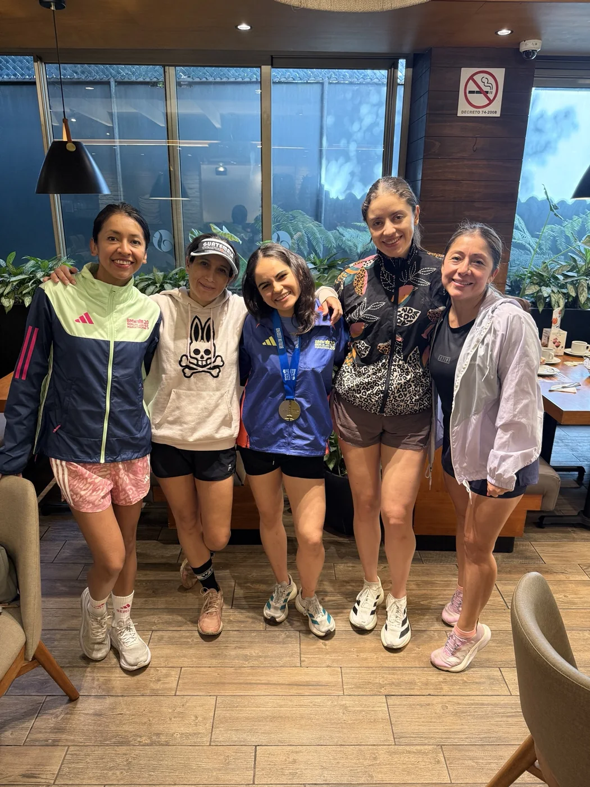
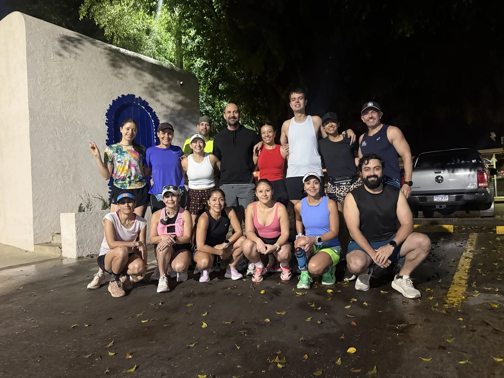
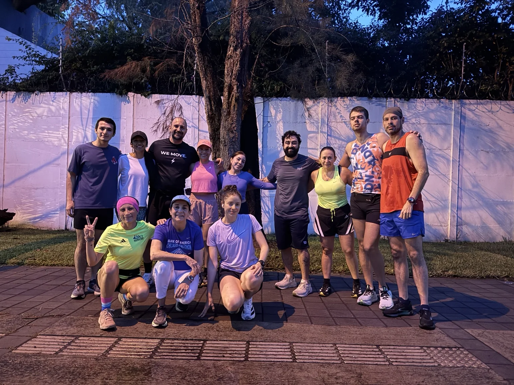
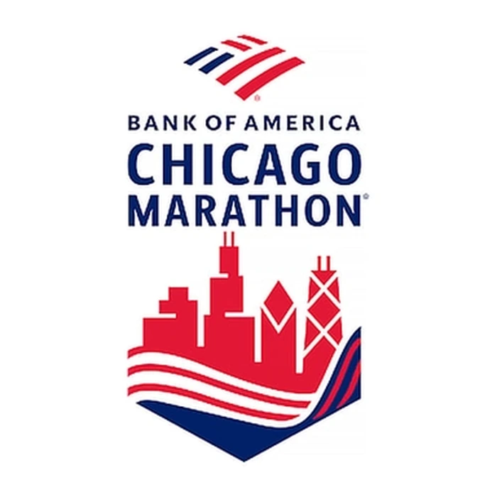
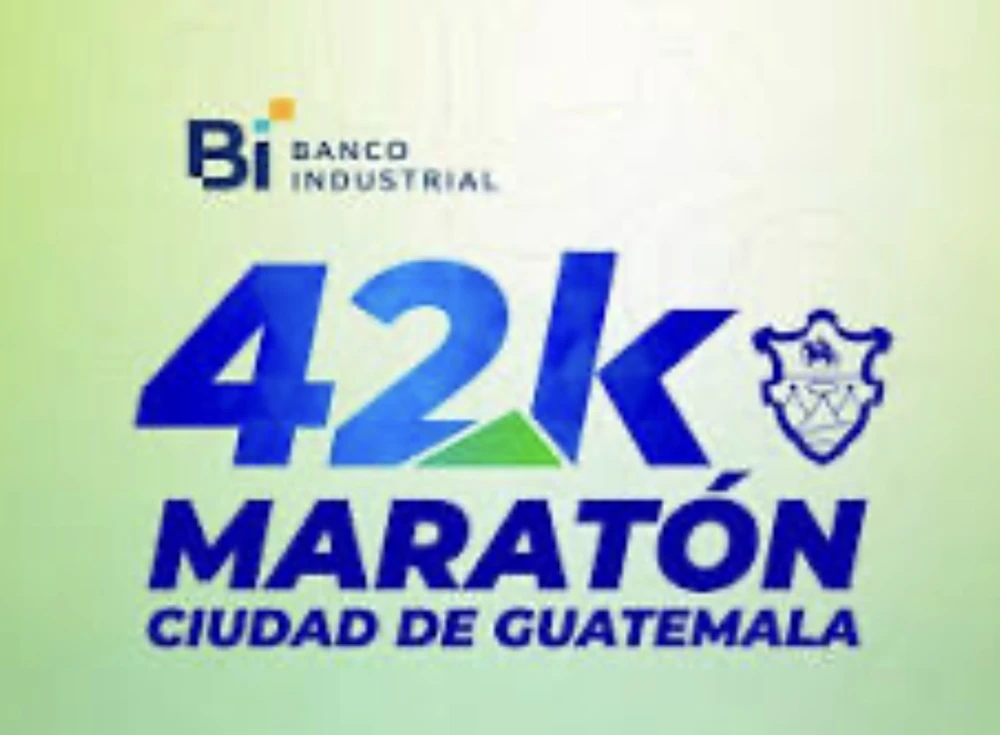

PRINCIPIANTE
Descubre el running, desarrolla tu resistencia y alcanza tus primeras metas acompañado por el equipo.
GUATEMALA · RUNNING COMMUNITY
Tal vez estás pensando en empezar a correr, preparando tu primera carrera o soñando con llegar más lejos. Sea cual sea tu meta, aquí encontrarás amigos, motivación y un equipo con muchas ganas de compartir el camino contigo. ¡Tu próxima aventura puede comenzar aquí!
Todos los niveles · Participar en el grupo no tiene costo
Hay algo especial en correr acompañado. Los kilómetros se disfrutan más, los retos se sienten más alcanzables y, sin darte cuenta, los compañeros de entrenamiento se convierten en grandes amigos. Aquí compartimos experiencias, aprendizajes, alegrías y las ganas de seguir creciendo juntos.
VEN A CONOCERNOS
 WE
WEEn CoolRunners Guatemala, cada corredor encuentra una comunidad que lo acompaña, lo motiva y celebra cada uno de sus logros.
Desde quienes están dando sus primeros pasos en el running o preparan sus primeros 5K y 10K, hasta quienes sueñan con completar un medio maratón o maratón; desde quienes se preparan para HYROX y ultramaratones de 50K, 100K y más, hasta quienes buscan mejorar sus marcas personales o clasificarse al Maratón de Boston.
Cada corredor tiene su propia historia, su propio ritmo y sus propias metas. Y todas merecen ser celebradas.
Descubre el running, desarrolla tu resistencia y alcanza tus primeras metas acompañado por el equipo.
Consolida tu preparación, mejora tus tiempos y conquista nuevas distancias con confianza.
Perfecciona tu rendimiento, supera tus marcas y prepárate para grandes desafíos.
Compartimos kilómetros, esfuerzo, aprendizajes, risas y amistades que van mucho más allá del running.
Las metas son individuales, pero el camino lo recorremos juntos.
Desde quienes están empezando a correr o preparando su primera carrera (principiante), pasando por quienes buscan mejorar su resistencia, velocidad y conquistar nuevas distancias (intermedio), hasta corredores experimentados que quieren superar sus marcas y alcanzar grandes metas (avanzado). Cada uno a su ritmo, todos compartiendo el camino.
Nos motivamos, nos apoyamos y celebramos cada logro, grande o pequeño. Porque las mejores historias también se construyen corriendo juntos.
Ven a compartir nuestros entrenamientos grupales cuando quieras. Te recibiremos con gusto, sin importar tu experiencia o ritmo.
Cada día compartimos algo diferente: hay momentos para aprender a correr mejor, otros para ganar confianza y otros simplemente para disfrutar. ¡Todas las sesiones nos ayudan a avanzar!
Aprendemos a mantener un paso exigente sin perder el control del esfuerzo.
El tempo es una forma de entrenar en la que corremos a un paso exigente, pero que todavía podemos controlar. Se siente como un 7 de 10: podemos decir algunas frases cortas, aunque mantener una conversación ya cuesta un poquito.
Solemos trabajar períodos de 15 a 40 minutos, seguidos o divididos en partes con descansos cortos. ¿Para qué nos ayuda? Para acostumbrarnos a mantener un buen ritmo por más tiempo, administrar mejor nuestra energía y llegar con más confianza al final de una carrera.
Corremos tramos rápidos y practicamos movimientos que nos ayudan a correr con más soltura.
INTERVALOS · Alternamos tramos rápidos con momentos de recuperación. Algunos son cortitos y otros duran varios minutos. La idea no es correr al máximo siempre, sino practicar esfuerzos exigentes y repetirlos con buena calidad. Así vamos ganando velocidad y resistencia, paso a paso.
TÉCNICA DE CARRERA · ¿Has visto esos ejercicios de levantar las rodillas, dar saltitos o mover los pies de distintas maneras? Son prácticas para mejorar la coordinación, el equilibrio y la forma de correr. Durante unos 15 a 30 minutos nos concentramos en hacer bien cada movimiento, no en hacerlo más rápido. Con la práctica, correr puede sentirse más natural y fluido.
Sumamos tiempo en movimiento, compartimos el recorrido y nos preparamos para llegar más lejos.
El fondo es normalmente la salida más larga de la semana. Aquí el reto no es correr rápido: es enseñarle al cuerpo y a la mente a pasar más tiempo corriendo, con calma y constancia.
La duración cambia según tu experiencia y tus metas. Para alguien será una hora; para otro corredor, dos horas o más. A veces incluimos cuestas, que nos ayudan a practicar cómo mantener el esfuerzo en subidas. ¿Qué ganamos? Más resistencia, mejor manejo de nuestra energía y la confianza de descubrir que podemos llegar cada vez más lejos.
Un día para correr con calma, conversar y disfrutar mientras seguimos construyendo resistencia.
¡Por supuesto! El Easy Run es una salida a un paso suave, de esos en los que todavía puedes hablar y reírte con tus compañeros sin quedarte sin aire. No se trata de competir con el reloj.
Muchos de estos rodajes duran entre 30 y 60 minutos, según lo que cada persona necesita. Aunque parezca un entrenamiento sencillo, ayuda a construir resistencia y a sumar kilómetros sin cansarnos tanto como en los días intensos. Y después de una semana de esfuerzo, también es una buena oportunidad para recuperar y disfrutar del equipo.
Los enlaces de ubicación abren una búsqueda en Maps. Confirma el punto exacto y las indicaciones de cada sesión antes de asistir.
Cada carrera tiene su historia. Y las personas con quienes compartimos el camino son las que hacen que esos recuerdos duren para siempre.
 COACH KIQUE
COACH KIQUETe presentamos a Coach Kique, nuestro entrenador y una de las personas que hacen posible cada encuentro de CoolRunners. Con experiencia acompañando corredores desde 2010, nos guía en los entrenamientos, comparte lo que ha aprendido en el camino y nos anima a seguir descubriendo todo lo que podemos lograr.
Desde el primer día, la idea es que te sientas acompañado: que puedas preguntar, aprender, disfrutar de correr y celebrar tus avances a tu propio ritmo.
Ven a nuestros encuentros grupales cuando quieras: compartir kilómetros con CoolRunners no tiene costo.
¿Te gustaría preparar una carrera o tener un plan hecho especialmente para ti? Coach Kique también ofrece entrenamiento personalizado en su propia página, donde encontrarás toda la información.
CONOCE A COACH KIQUEDetrás de cada foto hay una historia: madrugadas, entrenamientos, metas cumplidas y muchísimas risas. Estos son algunos de los momentos que hacen especial a nuestra familia de corredores.




¿Recuerdas lo que sentiste al cruzar la meta de tu primer maratón? Cada carrera guarda momentos, personas y emociones que merecen recordarse. Queremos reunir esas historias de nuestros corredores, incluso las de antes de unirse a CoolRunners. ¡Nos encantará que la tuya sea parte de esta colección!
QUIERO COMPARTIR MIS MARATONESUna sola inscripción · Hasta 100 maratones por envío · Datos privados






Maratones que inspiran nuestras historias · Los nombres sin logo se muestran como texto
¿Te gustaría venir a correr con nosotros? ¡Nos encantará conocerte! No importa si estás empezando o si ya llevas tiempo corriendo. Cuéntanos qué te gustaría hacer o qué necesitas saber antes de acompañarnos. Aquí hay un lugar para ti.
Cuéntanos un poquito sobre ti.
O escríbenos directamente a coolrunnersgt@gmail.com